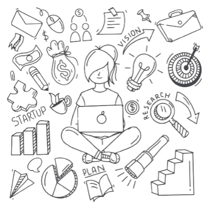

Desarrolladores
-
Juan Pablo García González
Estudiante de Ingeniería en Sistemas del Tec de Morelia
-
Neftali Odin Garía Ramírez
Estudiante de Ingeniería en Sistemas del Tec de Morelia
-
Andres Daniel Ibarrola Origel
Estudiante de Ingeniería en Sistemas del Tec de Morelia
-
Sandra Chávez Hernández
Estudiante de Ingeniería en Sistemas del Tec de Morelia
Acerca de EcoScan
EcoScan surgió como un proyecto diseñado para la duración de un semestre en el marco de la materia de Desarrollo Sustentable. El propósito fundamental de este proyecto es generar un impacto significativo en la sociedad, contribuyendo de manera concreta a la causa de la sostenibilidad global. Al enfocarse en la promoción de prácticas de consumo responsable y la concienciación pública, EcoScan se erige como una iniciativa que no solo reviste importancia académica, sino que también ofrece el potencial de efectuar un impacto positivo y medible en la comunidad y el entorno medioambiental. La combinación de aprendizaje práctico y el fomento de la sostenibilidad en el consumo constituye una estrategia eficaz para abordar los retos contemporáneos de la sostenibilidad.
Misíon
Se espera que el presente proyecto pueda orientar a las personas a que tomen mejores decisiones con base en la informacion recolectada a través de portales oficiales de las empresas en cuestion, asi mismo buscamos elevar la conciencia de sostenibilidad, influir en las elecciones de compra hacia opciones más éticas y transparentes, y promover la mejora de las prácticas de producción. En última instancia, aspiramos a contribuir a la reducción de la huella ambiental y social de los productos en todo el mundo, generando un impacto positivo en el medio ambiente y la sociedad.
Visíon
Nuestra visión en EcoScan es la creación de un mundo donde cada elección de compra sea una elección sostenible. Imaginamos un futuro en el que los consumidores tengan el conocimiento y la capacidad para tomar decisiones de compra que no solo satisfagan sus necesidades, sino que también respeten y protejan el planeta y sus habitantes. Vemos una sociedad donde la sostenibilidad sea una parte intrínseca de la toma de decisiones, y donde las empresas compitan por ofrecer productos que respeten los principios de economía circular y justicia social. En última instancia, aspiramos a ser un catalizador de cambio en la transición hacia un mundo más verde y responsable.